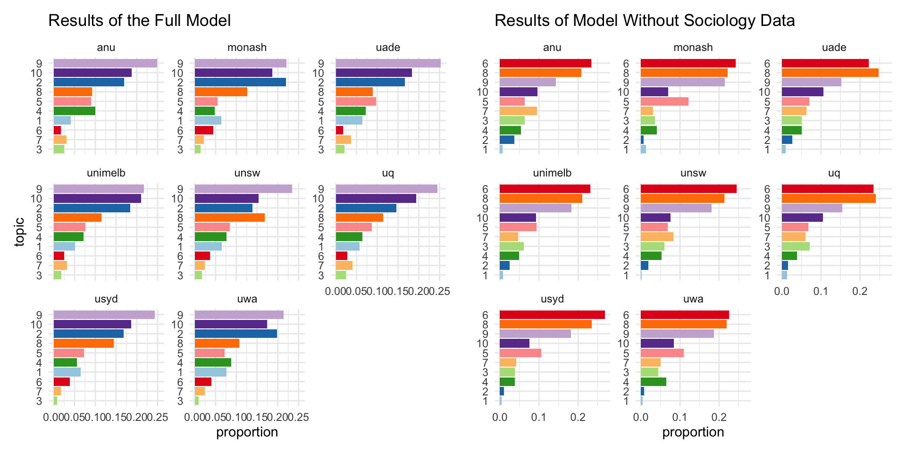
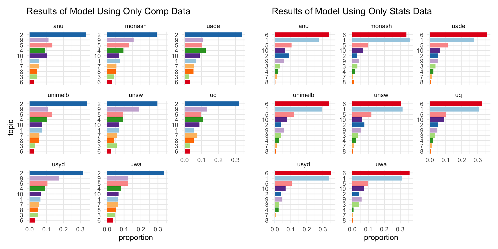
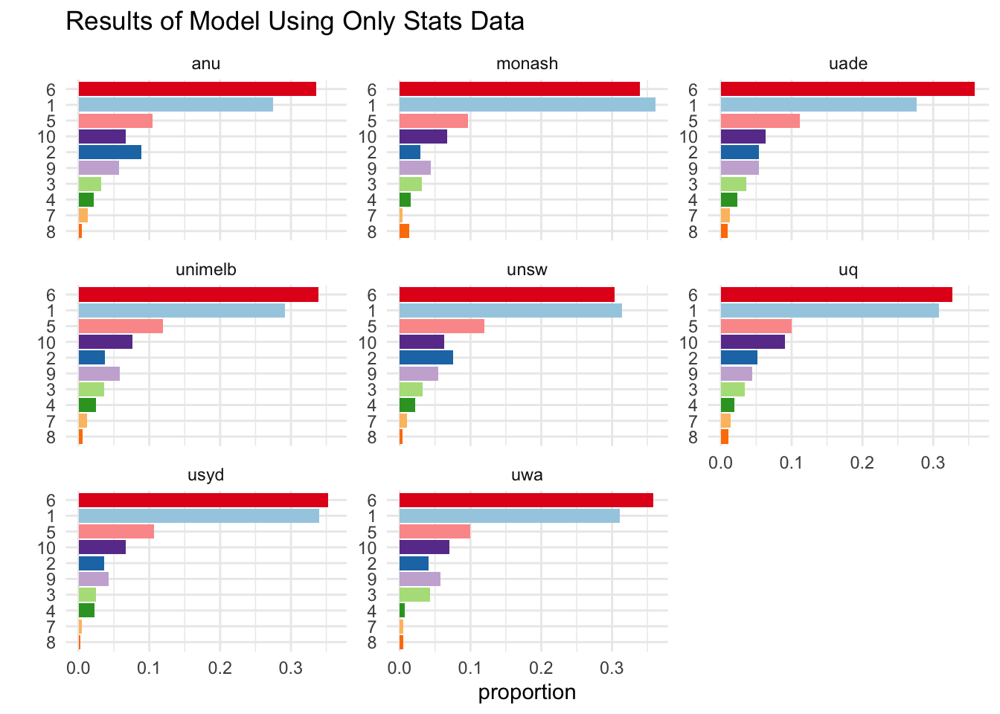

7 text2vec
As mentioned in Section ?sec-unit-bigram, since the collected university data is relatively small, to make more educated and meaningful interpretations, similar words shall be grouped together and counted by groups. This is usually computed using text corpus, which is a language resource consisting of a large and structured set of texts, since data science is a new term waiting to be defined, there is no available text corpus on this topic. Therefore, we adopted the concept of word2vec and tried to build our own text corpus.
There are multiple publicly available models and packages to conduct similar computations, however, each model takes hours to fit. Due to time constrains, we have only fitted the Dirichlet Allocation (LDA) model with a few parameter adjustments using the text2vec package with the concepts illustrated by Das (2016).
7.1 Algorithm and Model Fitting
According to Das (2016), the algorithm behind the LDA model is to convert words to document-term matrix (DTM), where the rows, columns and entries correspond to documents, terms and counts respectively. LDA then fits a probabilistic model that assumes a mixture of latent topics, where each topic has a multinomial distribution for all words. The number of topics is a parameter that could be adjusted by needs.
The initial code to build the LDA model was provided by Professor Tanaka, the major part of the code to build the first version of LDA model is also provided below.
list(
tar_target(wiki_stats, get_wiki_articles("https://en.wikipedia.org/wiki/List_of_statistics_articles")),
tar_target(wiki_sociology, get_wiki_articles("https://en.wikipedia.org/wiki/Index_of_sociology_articles")),
tar_target(wiki_computing, get_wiki_articles("https://en.wikipedia.org/wiki/Index_of_computing_articles")),
tar_target(clean_wiki_stats, map(wiki_stats, clean_wiki_article), format = "rds", repository = "local"),
tar_target(clean_wiki_sociology, map(wiki_sociology, clean_wiki_article), format = "rds", repository = "local"),
tar_target(clean_wiki_computing, map(wiki_computing, clean_wiki_article), format = "rds", repository = "local"),
tar_target(clean_stats, preprocess_text(clean_wiki_stats)),
tar_target(clean_ssc, preprocess_text(c(clean_wiki_stats, clean_wiki_sociology, clean_wiki_computing))),
tar_target(itoken_ssc, itoken(clean_ssc, tokenizer = stem_tokenizer),
cue = tar_cue(mode = "thorough")),
tar_target(vocab_ssc, create_vocabulary(itoken_ssc, ngram = c(1, 3), stopwords = stopwords::stopwords()),
cue = tar_cue(mode = "thorough")),
tar_target(vocab_ssc_prune, prune_vocab(vocab_ssc, n_min = 40),
cue = tar_cue(mode = "thorough")),
tar_target(dtm_ssc, create_dtm(itoken_ssc, vocab_vectorizer(vocab_ssc_prune)),
cue = tar_cue(mode = "thorough")),
tar_target(tcm_ssc, create_tcm(itoken_ssc, vocab_vectorizer(vocab_ssc_prune),
skip_grams_window = 5L),
cue = tar_cue(mode = "thorough")),
tar_target(word2vec_model_ssc, model_glove(vocab_ssc_prune, tcm_ssc),
cue = tar_cue(mode = "thorough")),
tar_target(word2vec_dist_ssc, dist2(t(word2vec_model_ssc$components), method = "cosine"),
cue = tar_cue(mode = "thorough"), format = "rds", repository = "local"),
tar_target(word2vec_res, find_close_words("statistics", word2vec_dist_ssc, 10),
cue = tar_cue(mode = "thorough")),
tar_target(lda_model03_ssc, model_lda(dtm_ssc, ntopics = 3),
format = "rds", repository = "local"),
tar_target(lda_model20_ssc, model_lda(dtm_ssc, ntopics = 20),
format = "rds", repository = "local")
)The model must be trained before it could be used, we web scrapped over 4448 Wikipedia articles as training data, including 2816 articles in statistics, 1005 articles in sociology and 627 in computing. The functions used in the codes above such as get_wiki_articles,clean_wiki_article, get_clean_combined_wikis, model_lda, preprocess_text, stem_tokenizer, prune_vocab, model_glove and find_close_words are constructed by Professor Tanaka for pre-processing purposes, the original scripts could be found from the project repository.
7.2 Model Adjustments
We have tested using different values for parameter ntopics and tried out training the LDA models with different combinations of data.
The results provided differs from models, Figure 7.1 compares the results produced by the full model and model without sociology data on ten topics.

From the results computed by the full model, Topics 9, 10, 2 and 8 occupies relatively higher proportion compare with the others, but the order varies across universities, and their proportions are not significantly larger than the rest of other topics, makes it hard to draw meaningful interpretations. On the right hand side, results from the model without sociology data demonstrates a better picture: Topics 6, 8 and 9 in this case are the top 3 topics across all Go8 universities, however, proportions of Topic 10, 5, 7, 3 and 4 are also obvious higher in some of the universities, brings in difficulties to make justifications.
As sociology data tends to brings in noises to the model, and is not closely relevant to the data science topic compare with statistics and computing, another two models are fitted using only statistics data and computing data respectively, the results of both models are shown in Figure 7.2.

Topic 2 is the only dominating topic based on the results provided by the model using only computing data, which provides a clearer picture than the previous models. The table below listed the top ten words for each topics, it turns out Topic 2 contains words like comput (computation etc.), system, program, softwar (software), which are associated with computational aspects, especially software. This model provides a more meaningful results than the prior ones, however, there is not much interpretations could be made for the other topics, the information it offers is still not very satisfying.
| Topic 1 | Topic 2 | Topic 3 | Topic 4 | Topic 5 | Topic 6 | Topic 7 | Topic 8 | Topic 9 | Topic 10 |
|---|---|---|---|---|---|---|---|---|---|
| window | comput | ibm | algorithm | network | bit | format | intel | softwar | languag |
| system | system | comput | can | use | instruct | use | chip | compani | program |
| version | program | system | number | can | memori | imag | design | appl | use |
| releas | use | disk | function | web | use | digit | processor | free | compil |
| support | machin | drive | set | data | address | can | bit | use | code |
| user | design | use | state | internet | regist | video | core | also | function |
| oper_system | process | control | languag | secur | processor | standard | mhz | develop | object |
| oper | develop | machin | use | access | oper | disc | use | open | type |
| os | inform | card | symbol | protocol | can | data | introduc | sourc | can |
| file | softwar | unit | problem | link | data | file | microprocessor | user | implement |
In terms of the model trained by only data in statistics, there are also dominating topics across all eight universities: Topics 6 and 1, besides, topics 5, 10, 2, 9 together took a relatively higher proportion compare with the rest of other topics. Both models using only computing or statistical data delivers better results, model trained by only statistical data provides more information than the other, hence is selected to use for further analysis on our university data.
Note that it requires highly skilled linguists and huge efforts to establish a proper text corpus, the model we built is still fairly basic and could be further optimised by adjustments.
7.3 Apply the Selected Model to Collected University Data
Before applying the fitted LDA model to our university data set, words from unit overview and learning outcomes are stemmed using the SnowballC package, so that noises like plurals and part of speech are removed. The stemmed words are then assigned to the corresponding topic with the highest probability, instead of counting the appearance of words, the new counts generated are based on topics.
Similar with the university breakdown in Section ?sec-unit-bigram, to make more objective comparisons, counts are converted to proportions due to different number of units scrapped for the eight universities. Figure 7.3 suggests that Topics 1 and 6 are obviously the dominating topics in Master of data science at all Go8 universities, whereas Topics 2, 5, 9, 10 together also occupies a relatively large proportion.

The top ten words based on probabilities for each of the ten topics are provided below, colours of the columns are aligned with Figure 7.3. Topic 1 contains words like statist (statistics), data, popul (population), and we can see data, algorithm, analysi (analysis), model, cluster, comput (computation etc.) in topic 6, it is a reasonable interpretation that these two topics are both associated with computational aspects.
| Topic 1 | Topic 2 | Topic 3 | Topic 4 | Topic 5 | Topic 6 | Topic 7 | Topic 8 | Topic 9 | Topic 10 |
|---|---|---|---|---|---|---|---|---|---|
| studi | model | sampl | theta | probabl | data | distribut | x_ | test | process |
| use | variabl | estim | function | one | use | frac | frac | statist | time |
| statist | regress | mean | probabl | number | algorithm | alpha | left | hypothesi | point |
| research | estim | valu | x_x | theori | analysi | mu | right | valu | stochast |
| data | beta | distribut | distribut | bayesian | can | beta | sum | two | state |
| design | linear | varianc | variabl | event | method | function | operatornam | number | function |
| can | use | statist | random | can | model | gamma | sigma | use | can |
| effect | y_ | use | x_ | prior | set | right | y_ | correl | random |
| popul | squar | standard | random_variabl | infer | cluster | left | cdot | rank | markov |
| may | can | popul | mathcal | use | comput | normal | operatornam_e | measur | space |
In addition, words under Topics 2,5,9 and 10 are model, regression, estim (estimate), linear, probabl (probability), bayesian, prior, infer, test, statist (statistics), hypothesi (hypothesis), correl (correlation), most of them are related to math and statistics, and also more on the computational side of them.
The results above further proves the earlier findings discussed in Section ?sec-unit-code and Section ?sec-unit-bigram: Master of Data Science degrees offered at Go8 universities tend to be mainly IT based, the major components are computational as well as statistical/mathematical aspects.

Figure 7.4 above demonstrates a breakdown by topics instead of universities, it is clear that compares with the results based on only faculty in ?sec-unit-code, the differences between Go8 are not as much here. The proportions occupied by the eight universities under each topic are fairly similar to each other, indicating the subjective choice made regarding the grouping method in Section ?sec-unit-code might have provided a slightly misleading information, but it would require further explorations to confirm whether it is truly the case.